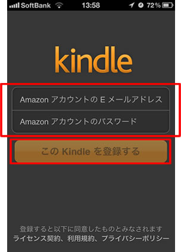
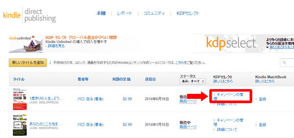

| Kindle本の返品/再ダウンロード・パソコンで読む方法などキンドル小技集～KDPシステムの利用ティップス集～: はじめての方でもよくわかる！電子出版するためのティップス集その８（簡易読みきり版） 【はじめての電子書籍出版ティップス集】 | |
| 川口 浩治 | |
| (2016) | |
本書の内容について
本書の内容は、電子書籍や電子書籍の市場、Ｋｉｎｄｌｅ本の特徴やＫＤＰシステムの利用方法、本の企画の立て方や文章制作方法、そして、電子出版・販売のノウハウなど、電子書籍出版に関する基本的な内容をまとめさせていただきました。
そのため、既にＫｉｎｄｌｅ書籍をご出版されている方には、知っている情報も多く含まれるかと思われますので、予め、ご了承の程、何卒よろしくお願い致します。ただ、これから出版をされたい方や電子書籍初心者の方にとっては、為になる情報や役に立つ情報もあるかと思います。
また、本書は気軽に読んでいただけるように、文量は１０，０００文字以内となっております。
少しでも本書の内容が、読者様のお役に立てれば非常に嬉しく思います。
※シリーズ本のご紹介（一部）
- 『Ｋｉｎｄｌｅ出版ってどうなの？～アマゾンキンドルの魅力～』～はじめての電子書籍出版ティップス集その１～
- 『ＫｉｎｄｌｅとＫＤＰの話～ユーザーと著者にとってのメリットとは？～』～はじめての電子書籍出版ティップス集その２～
- 『紙の本と電子書籍の違い～基本フォーマットとこれからの出版ビジネスについて～』～はじめての電子書籍出版ティップス集その３～
・・・など。
※その他、多数出版
～はじめての電子書籍出版ティップス集その８～
Ｋｉｎｄｌｅ本の返品/再ダウンロード・パソコンで読む方法などキンドル小技集～ＫＤＰシステムの利用について～
※簡易読みきり版
Ｋｉｎｄｌｅ書籍をスマートフォンで読む方法
Ｋｉｎｄｌｅ書籍は、Ａｍａｚｏｎが提供しているＫｉｎｄｌｅ端末の他にも、ｉＰｈｏｎｅやＡｎｄｒｏｉｄなどのスマートフォン、タブレット端末などからも読むことができます。（※既にこの書籍はスマートフォンで見られているかもしれません。）
ただ、ここでは、スマートフォン（今回はｉＰｈｏｎｅ）でＫｉｎｄｌｅ書籍を読むための方法を改めて記載させていただきます。
１）Ａｍａｚｏｎから提供されている無料のＫｉｎｄｌｅアプリをインストールする
まず最初にやることは、Ａｍａｚｏｎから提供されている無料のＫｉｎｄｌｅアプリを、お手持ちのスマートフォンにインストールします。
Ｋｉｎｄｌｅアプリをインストールするには、ｉＰｈｏｎｅでＡｐｐストアにアクセスして、「Ｋｉｎｄｌｅ」と検索すれば、すぐに見つかると思います。
２）インストールしたＫｉｎｄｌｅアプリからＫｉｎｄｌｅを登録する
ｉＰｈｏｎｅにダウンロードしたアプリケーションを起動し、いつも買い物で使っているご自身のＡｍａｚｏｎＩＤ、パスワードを入力します。
Ａｍａｚｏｎアカウントが入力できたら、『このＫｉｎｄｌｅを登録する』をクリックします。

※この操作により、Ｋｉｎｄｌｅ書籍を読むための下準備ができました。
３）Ａｍａｚｏｎサイトにて、Ｋｉｎｄｌｅ書籍を購入する。
次に、Ａｍａｚｏｎサイトにて、書籍の購入します。
購入したいＫｉｎｄｌｅ書籍の販売ページにて、画面右側にある『◯◯で購入』のボタンをクリックします。
すると、購入完了画面が表示されます。
※Ｋｉｎｄｌｅ書籍の購入作業はこれだけで完了です。
※ちなみに、Ｋｉｎｄｌｅ端末が登録できていないと、「このコンテンツを利用するには、Ｋｉｎｄｌｅ端末またはアプリをアカウントに登録する必要があります。」というメッセージが表示されます。
もし、うまく購入できない場合は、ｉＰｈｏｎｅで登録したアマゾンのアカウントと、パソコン上でログインしたＡｍａｚｏｎアカウントが異なっている可能性がありますので、再度ログインアカウントをお確かめください。
４）ｉＰｈｏｎｅを使って、Ｋｉｎｄｌｅ書籍を読む
Ｋｉｎｄｌｅ書籍を購入したあと、ｉＰｈｏｎｅ端末でＫｉｎｄｌｅアプリを起動すると、先ほど購入した書籍のダウンロードが始まります。
ダウンロード完了後、書籍のアイコンをクリックすると、Ｋｉｎｄｌｅ書籍が読めるようになります。
以上で、お手持ちのスマートフォンでもＫｉｎｄｌｅ書籍が読めるようになります。
Ｋｉｎｄｌｅ書籍をパソコンで読む方法
Ｋｉｎｄｌｅ端末やスマートフォンを持っていないと読むことができなかったＫｉｎｄｌｅ書籍が、とうとう正式にパソコンでも読めるようになりました。
つまり、パソコンさえ持っている人は、Ｋｉｎｄｌｅ本を読むことができるようになったのです。
これまで、パソコン上で読むには、Ｋｉｎｄｌｅ Ｃｌｏｕｄ Ｒｅａｄｅｒというサイトで読むことができたのですが、こちらのサイトでは、固定レイアウト型の書籍しか読むことができませんでした。
しかし、今回、正式にパソコン用ソフトが出てきたことで、リフロー型の書籍もパソコン上で読むことができるようになりました。
ということで、早速アプリのダウンロードと使い方についてご紹介させていただきます。
Ｋｉｎｄｌｅ ｆｏｒ ＰＣのソフトはこちらからダウンロードいただけます。
https://www.amazon.co.jp/dp/B011UEHYWQ
上記のページにアクセスしたら、ソフトをダウンロード購入します。（無料です。）
次にダウンロードしたソフトを実行すると、自分のパソコンにＫｉｎｄｌｅ ｆｏｒ ＰＣのソフトがインストールされます。
そして、インストールされた「Ｋｉｎｄｌｅ ｆｏｒ ＰＣ」を起動します。
すると、トップページが表示されますので、自分のＫｉｎｄｌｅコンテンツを同期するため、画面上部になるメニューの『ツール』から『新しい本を確認して同期する』を選択します。
次に、ご自身のＡｍａｚｏｎＩＤを入力すると、無事同期完了ができます。これだけで、設定はすべて完了です。
日本版のＫｉｎｄｌｅ ｆｏｒ ＰＣソフトの登場により、Ｋｉｎｄｌｅ本は、Ｋｉｎｄｌｅ端末、スマートフォン（Ａｎｄｒｏｉｄ、ｉＯＳ）、タブレット、パソコン（Windows８）上で読むことができるようになりました。
Ｋｉｎｄｌｅ書籍を再ダウンロードする方法
ここでは、Ｋｉｎｄｌｅ書籍の再ダウンロードの方法についてご紹介します。
Ｋｉｎｄｌｅ書籍の内容に修正や校正があった場合に、読者が最新版を入手するには、Ａｍａｚｏｎのカスタマーサービスに連絡をする必要があります。
一度購入したＫｉｎｄｌｅ書籍を、再ダウンロードする手順は次のステップとなります。
１）Ａｍａｚｏｎサポートページにアクセス
２） お問い合わせ内容を選択する
３）「Ｅメール」を選ぶ
４）下記の文言を記載し、メールで送信する
１）Ａｍａｚｏｎサポートページにアクセス
下記のＵＲＬよりＡｍａｚｏｎのサポートページにアクセスします。
２） お問い合わせ内容を選択する
次の通り選択します。
・『デジタルサービス』→『Ｋｉｎｄｌｅ本について』→『購入したコンテンツをダウンロードできない』
４）「Ｅメール」を選ぶ
５）下記の文言を記載し、メールで送信する
▼Ａｍａｚｏｎサポート向けの文面(例)
・書籍名：『書籍名』
・ＡＳＩＮ:『ＡＳＩＮ番号』
以前このＫｉｎｄｌｅ本を購入しました。最新の版を再ダウンロードを希望します。
※また、新しいバージョンにアップデートすると、現在保存しているハイライト、ブックマーク、メモおよび読み終えた最後のページ番号が削除されることを、わたしは十分に理解しており、それらを了解したうえで、最新版のダウンロードを申請します。
最後に、『メールで送信』ボタンをクリックすします。
以上で、再ダウンロードの手続きは完了です。
※通常、１２時間以内に「問い合わせ時に指定した」Ｋｉｎｄｌｅ端末、もしくはＫｉｎｄｌｅアプリ内に自動的にダウンロードされます。
Ｋｉｎｄｌｅ本を返品する方法
アマゾンのＫｉｎｄｌｅ本は、お手持ちのＫｉｎｄｌｅ端末やスマートフォンなどを利用して、気になる書籍をすぐに購入することができる大変便利なものです。
また、アマゾンをよくご利用される方は、「１-Ｃｌｉｃｋで今すぐ買う」の設定をされている方も多いと思いますが、Ｋｉｎｄｌｅコンテンツも、この設定と同様で、ボタン1つでＫｉｎｄｌｅコンテンツを購入できます。
ただ、ボタン１つで簡単に購入できてしまうため、時には間違って購入してしまう可能性もあります。
そんな場合は、所定の手続きを行なえば、Ｋｉｎｄｌｅ本も返品が可能です。
ここでは、Ｋｉｎｄｌｅ書籍を間違って購入してしまった方のために、Ｋｉｎｄｌｅ本を返品する方法についてご紹介させていただきます。
Ｋｉｎｄｌｅ本は、注文日から７日以内なら返金してもらえる
実は、あまり多くの方には知られていないのですが、Ｋｉｎｄｌｅ本は注文日から７日以内であれば、アマゾンの裁量によって返品することができます。
つまり、本当に誤って購入してしまった場合(たとえば、タブレット上で誤操作をしてしまい、１クリック決済が完了してしまった場合)でも、適切な処理をすれば、返品、返金の処理が可能なのです。
ちなみに、アマゾンのヘルプページを見ても、下記のような記述があります。
≪※アマゾンのヘルプページより抜粋≫
Ｋｉｎｄｌｅコンテンツは、購入間違いなどの場合、注文日から７日以内に限り、Ａｍａｚｏｎの裁量にて返品を承ります。ただし、当サイトで返金を行った場合、コンテンツはご利用いただけなくなりますのでご了承ください。
Ｋｉｎｄｌｅコンテンツの返品をご希望の場合は、ヘルプページ右側の「カスタマーサービスに連絡」ボタンをクリックのうえ、当サイトへご連絡ください。お問い合わせは、電話またはＥメールで承っております。
Ａｍａｚｏｎのサービスを不正に利用することは禁止されて おります。Ａｍａｚｏｎは、その裁量の下で予告なく、サービスの拒否、アカウントの停止、コンテンツの削除と編集、またはご注文のキャンセル等を行う権利を留保します。
しっかりとした手続きを踏めば、例え、電子書籍でも返品ができるのですね。
それでは、ここからは、Ｋｉｎｄｌｅ本を返品する具体的な方法をご紹介させていただきます。
やるべきことは、カスタマーサービスに連絡をすること
Ｋｉｎｄｌｅ本の返品方法は非常に簡単です。
※返品は、カスタマーサービスに返品依頼を実施します。
返品依頼のステップとしては、下記の４ステップとなります。
１）カスタマーサービスへアクセスする
２）お問い合わせ内容を選択する
３）Ｅ-ｍａｉｌにて返品依頼をする
１）カスタマーサービスへアクセスする
まず最初に、下記のページのアマゾンのカスタマーサービスにアクセスします。
２）お問い合わせ内容を選択する
・『デジタルサービス』→『Ｋｉｎｄｌｅ本について』→『Ｋｉｎｄｌｅ本の返品』
３）Ｅ-ｍａｉｌにて返品依頼をする
最後に、カスタマーサービスにＥメールにて返品依頼をお願いします。
※返品依頼用文(サンプル)
下記のＫｉｎｄｌｅ本を誤って購入してしまったため、返品処理をお願い致します。
・タイトル：●●●●●●●●
・注文日：●●月●●日
・注文番号：Ｄ０１-XXXXXXX-XXXXXXX
で、返品依頼処理は完了です。
返品・返金処理は数時間で完了
アマゾンのカスタマーサービスに返品依頼をした場合、ほとんどの場合は数時間でカスタマーサービスから返品に関するメールが送付されてきます。※もし、数時間で完了しない場合でも、２，３日以内には完了すると思います。
以上でＫｉｎｄｌｅ本の返品作業は完了です。お疲れ様でした。
もし、今後、誤ってＫｉｎｄｌｅ本を購入してしまった場合は、慌てず騒がず、落ち着いてカスタマーサービスに連絡して、返品依頼をするようにしましょう。
ただし、Ｋｉｎｄｌｅ本の返品は、本当に間違ったときだけにすること
最後は、返品依頼に関するご注意点です。Ｋｉｎｄｌｅ本の返品は、本当に間違って購入してしまった場合だけにしましょう。
なぜなら、むやみやたらと、返品依頼をしてしまうと、アマゾンのブラックリストに載り、最悪の場合は、アマゾンのアカウントが凍結されてしまう可能性もあります。
そこで、Ｋｉｎｄｌｅ本の返品は、本当に間違ってしまったときだけに依頼することにしましょう。
※また、当たり前ですが、返金処理の完了後は、Ｋｉｎｄｌｅ本の再ダウンロードはできなくなりますので、ご注意くださいね。
それでは、これからも快適な電子書籍ライフをお楽しみください。
ＫＤＰセレクトにて無料キャンペーンを実施する
このページでは、Ａｍａｚｏｎ ＫＤＰセレクトの無料キャンペーンの設定方法をご紹介します。
Ｋｉｎｄｌｅ書籍は、ＫＤＰセレクトの登録期間９０日のうち、５日間だけ無料でアマゾン上で配布することができます。（９０日間の契約更新後に、再度５日間の無料配布ができるようになります。）
このキャンペーン期間中に、書籍を多くの人に配り、書籍の知名度や内容のレビューを多くもらうなど、マーケティング活動を行うことができるのです。
ここでは、その具体的な設定方法をご紹介させていただきます。
本の無料キャンペーンのスケジュールを設定方法
１）ＫＤＰへログインする
まず、ＫＤＰへログインします。
２）本棚でタイトルの横にあるチェックボックスをオンにして本を選択する
次は無料キャンペーンを実施する本を選びます。

３）「アクション」をクリックして「キャンペーンの管理」を選択する
次に、無料キャンペーンの管理画面を呼び出します。
４）キャンペーンの管理にて下記の必要事項を入力する
最後に、下記の必要事項を入力して完了です。
- 『新規』ボタンをクリック
- 『氏名』、『開始日』、『終了日』を入力
- 『保存』をクリック
※こちらの無料キャンペーンをうまく利用して、書籍のアピールにお役立てください。また、無料キャンペーンを実施したあとは、メルマガやブログ、TwittＥr,FacＥbookなどで、ご友人や知人の方にキャンペーンをご案内してあげてください。
ＫＤＰ税に関する情報の登録方法（最新版）
ここでは、アマゾンＫＤＰの税に関する情報の登録方法をご案内させていただきます。
２０１４年の年末に、税に関するインタビュー画面の仕様変更があったため、最新情報を掲載させていたします。
※Amazonへの出版申請には、税に関する情報の登録が必要となりますので、ＫＤＰシステムにログインし、税に関する情報の登録をお願い致します。
アマゾンＫＤＰへログイン
まずは、ご自身のＫＤＰシステムへログインし、アカウント画面をスクロールして、税に関する情報の「税に関する情報を登録する」をクリックします。すると、税に関する入力画面に遷移します。
※以下より、一般的な個人の方の入力例をサンプルとしてご紹介します。（実際の入力時には、入力画面の設問をよくお読みになってご自身に当てはまるものをご入力ください。）
税に関するインタビュー画面遷移（サンプル）
１）『米国の税制上、あなたは米国人ですか。』の質問にて"いいえ"を選択します
２）続いて、『受益者の種類』を選択、居住国、フルネーム(ローマ字)を入力します
※フルネームに関しましては、ローマ字入力にて実施します。(漢字やひらがな、カタカナは使用できません。)
３）『仲介者として行動する代理人ですか』にていいえをクリックします
すると、住所入力画面が表示されます。
４）住所情報を全てローマ字(英数字)で入力します

※こちらの入力も漢字やひらがなは利用できません。
５）郵送先住所を入力し、米国人テストの項目を確認します
定住所と同じ場合は、『定住所と同一』をクリックします。
６）ＴＩＮに関する項目『米国のＴＩＮまたは外国（米国以外）の納税者識別番号を持っていない』をクリックします。
※後に、Taxpayer Identification Number（ＴＩＮ）をご取得された場合は、こちらの税のインタビューは随時更新できます。
７）制作されたフォーム(W-8BEN)を確認し、『保存して続行』をクリックします。
８）続いて、電子版の1042-Sフォームの「私の税務情報報告書を電子的に入手することに同意します」をクリック、電子署名の「私の電子署名を提供することに同意します」をクリックします。
※こちらの電子署名に同意されない場合は、アマゾンとの認証プロセスにお時間がかかり、その作業が完了するまで電子書籍のご出版ができませんのでご注意ください。
９）電子署名の内容をお読みになり、すべてチェックします
１０）最後に氏名をローマ字にて入力、アマゾンアカウントのメールアドレス、地位または資格の項目を『個人』にて選択し、『提出』ボタンをクリックします。
※氏名はローマ字にてご入力ください。(漢字、ひらがなは利用できません。)
※また、メールアドレスは、アマゾンアカウントにログインしたメールアドレスをご入力ください。
以上で、税金に関するインタビューは終了です。
※こちらの入力内容は、あくまでもサンプルとなりますので、入力内容や選択項目は、設問をご確認のうえ、ご自身に当てはまる内容にて実施していただければと思います。また、税に関するインタビューについては、こちらのページご参考にしていただければと思います。→ https://kdp.amazon.co.jp/help?topicId=201274750
Ｋｉｎｄｌｅ書籍のプレビュー方法
ここでは、Ｋｉｎｄｌｅ書籍のプレビュー方法についてご紹介します。
１）下記のＵＲＬにてＡｍａｚｏｎＫＤＰのログイン画面にアクセスする
２）Ａｍａｚｏｎアカウントを使用してサインインする
３）Ｅメールアドレスとパスワードを入力する
４）ドラフト保存中の『書籍のタイトル』をクリック
５）書籍の登録画面を下段にスクロールし、"６. 本をプレビューする"の項目にて、シンプルプレビューツールの『本をプレビュー』ボタンをクリックする
６）ＷＥＢ上にＫｉｎｄｌｅ端末が表示されプレビューされます。
※Ｋｉｎｄｌｅの端末の右側にマウスを持っていくと、『 > 』マークが表示されますので、そちらをクリックするとページをめくれるようになります。
ＫＤＰの管理画面にてプレビュー画面がうまく表示できない場合の対処法
『プレビュー画面が表示されない。』と不安になる場合があります。
でも、安心してください。
正しい設定と操作で見えるようになります。
ＫＤＰシステムには、WEBブラウザ上で電子書籍のプレビューができる、便利な『シンプルプレビューツール』があります。
このツールを使うと、わざわざ自分のパソコンにプレビューツールをダウンロードする必要が無く、ＫＤＰのシステム管理画面上で電子書籍を確認できるため、とても便利です。
▼シンプルプレビューツールの場所
▼プレビューのサンプル画像
※こちらの画面で、ページをめくったり、フォントサイズを変更したり、閲覧端末(Kindle Fire、Kindle Fire HD、Kindle FireHD 8,9、Kindle PaperWhiteの4種類)を変更したりと、いろいろな操作がブラウザ上でできます。
しかし、シンプルプレビューツールで、実際に電子書籍の出来(でき)を確認するときに、うまくプレビューができないことがあります。
そこで、ここでは、シンプルプレビューツールが利用できない場合の解決策についてご案内させていただきます。
うまくプレビューができない原因
ＫＤＰの管理画面でうまくプレビューできない理由は、いくつかあります。
私が、以前、実際にアマゾンに質問したところ、プレビューができない理由として、以下の回答をいただきました。
▼(以下、アマゾンからのご回答メール)
Ｋｉｎｄｌｅ ダイレクト・パブリッシングにお問い合わせいただき、ありがとうございます。
このたびは、当サイトをご利用中に問題が発生し、お客様にご迷惑をおかけしておりますことをお詫びいたします。
- サイトの利用中に問題がある場合、別のブラウザーを使い出版を試みることをお勧めさせていただいております。
- Mozilla FirefoxがＫＤＰサイトの操作には最適でございますので、お手数ですが、こちらの利用をお試しいただけないでしょうか。
- また、お使いのパソコンを変えて試みることをお勧めさせていただいております。弊社のサイト利用に際しては、ご利用のシステム環境をご確認ください。推奨環境以外でご利用いただいている場合は、推奨環境でのご利用をお願いいたします。
- 推奨環境 オペレーティングシステム：Windows 7、Windows XP(SP2かそれ以降)、Windows Vista、MacOS X
一度サインアウトした上で、再度サインインいただき、お試しください。
このように、ＫＤＰの管理画面でプレビューできない原因はいくつかあるのですが、私のこれまでの経験上、ほとんどの場合は、お使いのブラウザーのバージョンに問題がある場合が多いようです。
ちなみに、IEなどの古いバージョンのブラウザをご利用されている場合、ＫＤＰの管理画面でうまく開かず、「ブラウザがサポートされていません」と表示されてしまいます。
解決策
この問題の解決策はとても簡単です。
お使いのブラウザのバージョンを最新のものにしていただくか、下記より最新のブラウザをダウンロードして、ダウンロードした最新のブラウザでシンプルプレビューツールを使うと、問題なくプレビュー画面を表示することができます。
以下に、最新のブラウザのダウンロード場所を併せてご案内させていただきます。
※ちなみに、アマゾン曰く、Mozilla FirefoxがＫＤＰサイトの操作には最適とのことです。(私は、GoogleChomeを利用しておりますが、ＫＤＰシステム内で、問題なくプレビューができております。)
以上、ＫＤＰの管理画面にてプレビュー画面がうまく表示されない場合の対処法について、ご紹介させていただきました。
Ｋｉｎｄｌｅ書籍の登録カテゴリーを変更する方法
出版後のカテゴリ変更は可能です
まず、事前知識として、アマゾンに出版した後のカテゴリーは変更ができます。カテゴリーとは、このような部分に記載されているところです。

通常、このカテゴリ部分は電子書籍を出版したときに、自動的に割り振られるようになります。そのため、自分の意図しないカテゴリ分けをされる可能性もございます。
※ご参考：アマゾンからのご案内
なお、本棚に表示されるカテゴリーオプションは、ウェブサイトのカテゴリーと完全には一致しておりません。
本棚ではBISAC(Book Industry Standards and Communications) に基づくカテゴリーをご選択いただきますが、ウェブサイトのＫｉｎｄｌｅストア上では参照カテゴリーが表示されるためです。このため、恐れ入りますが、本を出版した際、カテゴリーがご希望通りに反映されない可能性もございます。
なぜカテゴリ変更が必要なのか？
なぜ、出版後のカテゴリ変更処理が必要なのかというと、アマゾンでは、カテゴリ毎にランキングを形成されているからです。アマゾンのランキングページは、多くの方が見る場所です。このランキング上位に自分の書籍が入れれば、より多くの方にアピールできるようになります。
たとえば、ご自身が出版した電子書籍を人気のあるカテゴリや競合が強いカテゴリに登録してしまうと、ランキングの上位に食い込むことができず、販売機会を失ってしまう可能性があります。逆に、人気のないカテゴリや競合があまりいないカテゴリに登録することができれば、少しの販売数でも、アマゾンのカテゴリランキングの上位に表示され、より多くの販売に繋がる可能性があるのです。
カテゴリ変更できるのは、「Ｋｉｎｄｌｅ本」を2種類まで
ただし、以下の２つの注意点があります。
- カテゴリ変更を依頼できるのは、「Ｋｉｎｄｌｅ本」のカテゴリのみ。
- カテゴリ登録できるのは、２種類のみ。
また、Ｋｉｎｄｌｅ本を出版した場合、「本」のカテゴリは、追加登録ができませんので、こちらもご注意ください。
※ご参考：アマゾンからのご案内
恐れ入りますが、「本」のカテゴリーに関しましては、削除のリクエストのみ承っております。追加のリクエストは承っておりませんので、ご了承くださいますようお願いいたします。
出版したＫｉｎｄｌｅ本のカテゴリを変更する方法
さて、上記の点を踏まえた上で、出版したＫｉｎｄｌｅ本のカテゴリを変更する方法を改めて、ご案内させていただきます。
やり方は非常に簡単です。電子書籍のご出版後に、ＫＤＰカスタマーサポートへカテゴリ変更依頼を実施するだけです。
カスタマーサポートへのご連絡カテゴリは、『本の出版』内の『本のカテゴリの追加または変更』にて実施できます。
ＫＤＰカスタマーサービスへカテゴリ変更依頼
依頼本文は、アマゾンに分かるように書ければいいですが、念のため、依頼文の例文を以下に書いておきます。
アマゾンへの依頼文例
大変恐縮ですが、以下の通りカテゴリ変更処理をお願いできればと思います。
電子書籍名：『書籍名を記載』
ＡＳＩＮ番号：『ＡＳＩＮ番号』
【現在】
Ｋｉｎｄｌｅストア > Ｋｉｎｄｌｅ本 > ＸＸＸＸＸ > 現在のカテゴリ名
本 > ＸＸＸＸＸ > 現在のカテゴリ名 ※本のカテゴリは変更できません。
【変更後】
Ｋｉｎｄｌｅストア > Ｋｉｎｄｌｅ本 > ＸＸＸＸＸ > 変更したいカテゴリ名
Ｋｉｎｄｌｅストア > Ｋｉｎｄｌｅ本 > ＸＸＸＸＸ > 変更したいカテゴリ名（最大２つまで）
本 > ＸＸＸＸＸ > 現在のカテゴリ名 ※本のカテゴリは変更できません。
大変お手数をおかけいたしますが、ご確認とご対応の程、何卒よろしくお願い致します。
以上が、出版したＫｉｎｄｌｅ電子書籍のカテゴリを変更する方法です。ご参考になれば幸いです。（また、カテゴリ変更依頼後は、サイトに反映するまでに、最大７２時間かかる場合があります。）
※第８巻目の読み切り版はここまでとなります。
【著者紹介】
川口 浩治
～幼少期のころのお話～
東京都生まれ。とある八百屋の三男坊として生まれました。小さいころは、"末っ子"ということもあり、家族から"天使だ"ともてはやされました（笑）しかし、そんな天使に神様が、ちょっとした試練を与えることとなります。
移動販売式の八百屋だった両親は、毎日、トラックに野菜やくだものを載せて、近くの団地や集合住宅の方へ、野菜やくだものを売りに行っていました。
僕は小さいころ、そのトラックに乗って、よく仕事場までつれていってもらい、近くの団地の子供と一緒に遊んだりして楽しく過ごしていました。
ところが、僕が幼稚園に上がったころ、僕の身体にちょっとした異変がおこります。
最初にその異変に気付いたのは、僕の母でした。それは、どんな異変かと言うと、僕が普通に道を歩いていると、平坦な道でも、"なぜかよく転ぶのです。"
本当によく転びました。 (※母親に当時の様子を聞くと、本当によく転ぶから、最初は僕がふざけていると思っていたそうです（笑）
僕があまりにもよく転ぶので、『これはなんか変だ。』と母親が心配して、僕を病院に連れて行ってくれました。
そこで、僕の右足が、"ペルテス病"という重病にかかっていることが発覚します。
※ペルテス病とは、６歳前後の元気なお子様に発生しやすく、大腿骨頭に栄養を与えている血行がなんらかの理由により途絶え、同部が壊死となる疾患です。
そこから約２年、僕の右足に重たい鉄の器具（ギブス）を着けた生活が始まりました。
当時の僕は６歳くらい。
幼稚園に通っていたのですが、足に重たい鉄の塊を着けての初めての集団生活は結構きつかったです。
僕が歩くときは、「ガシャンガシャン」と音を立てて歩かざるをえませんでした。
もちろん、運動も満足にできない子供でした。友達からもからかわれたこともありました。
６歳くらいのお子さんがいらっしゃる方にはお分かりだと思いますが、この頃に"運動が出来ない"とか、"友達と違う"ということは明らかに致命的なことなのです。
周りの友達がサッカーをしたり、追いかけっこをしたりして遊んでいるのに、自分にはそれができない。とても惨めな思いをしたことを、今でも覚えております。
ただ、いいこともありました。
当時、八百屋をしていた父親に、『コージは足が悪いから、将来は身体を使った仕事はできないな。だから、勉強を頑張りなさい。』と言われたことです。
小学校にあがったばかりの僕は、自分の右足についている重たい足の補助器具を見ながら、
"うーん、確かに！！
と妙に納得して、勉強を頑張るようになりました（笑）
だから、学校の成績はいい方でした（笑）
ある意味、この足の病気のおかげで勉強を頑張ることになり、いつのまにか"学ぶこと自体"が好きになっていました。
～社会人の頃の話～
小さいころは、足の病気に悩まされたはものの、最高の家族と友人に恵まれ、順風満帆な学生生活を過ごすことができました。
そして、都内の理系大学を卒業し、晴れて社会人となります。
やる気と希望を持って、とあるマーケティング会社へ入社したのですが、入社当初は、同期や先輩との人間関係がうまくいかず、毎日、辛い日々を強いられました。
(※先輩からは、『殺す!』とか『使えない奴!』呼ばわれもしたりして、その言葉が、何度も何度も頭の中でエコーして眠れないこともありました。)
なんとなくモチベーションが下がってしまう自分に対して、『このままじゃまずい！このままじゃストレスでおかしくなっちゃう！』 と思い、 平日の夜や土日を使って、多くの本を読みあさり、セミナーにも参加するようになりました。
そして、セミナーや本から学んだことを実際に実践していき、徐々に自分の生活が変わり始めたことに気付き始めました。
例えば、セミナーや本から学んだことを応用して、独自の勉強法を確立し、国家資格を含むＩＴ関係の資格を一年間で９つ取得しました。
また、マーケティングの学習にも力を入れ、学んだノウハウを活用した結果、仕事で担当した製品の前年比売上３００％を達成させ、会社の高評価を取り続けることができました。
あるいは、平日の夜や休日の時間を使って制作したホームページから、独自のＷＥＢマーケティングを実施して、 毎月１００名以上の集客（資料請求やお問い合わせ）を継続的に取得できるようになりました。
この他にも、多くのマーケティング関係の本を読んだり、産業能率大学のマーケティング講座を受講したりと、マーケティングのスキルを磨き続けてきました。
～そして、現在～
その後、独立し、現在は、"自分が学んだ知識を少しでも世の中に役に立てたい！" と思い、ＷＥＢサービス提供事業者兼ＷＥＢマーケッターとして活動しています。
もちろん、現在も、いろいろなことに挑戦中ですし、日々勉強中です。（※勉強は、これからも一生続けていくつもりです。 ）そして、これからも、仕事を通じて様々な人と出会い、自分の周りの人と一緒に成長していけたら非常に嬉しいと思っています。
■著書
- 歯科医院のためのホームページ集客を成功させる８つのチェックポイント
- あなたのこころをほんの少しだけ明るくする３３のお話
- １度きりの人生。どうせなら、楽しく生きよう！～仕事や人間関係に役立つ２９の話～［気軽に読める哲学書］
- Ｋｉｎｄｌｅ出版ってどうなの？～アマゾンキンドルの魅力～: はじめての方でもよくわかる！電子出版するためのティップス集
他多数
Ｔｗｉｔｔｅｒ: https://twitter.com/koji050
Facebook: https://www.facebook.com/Koji4949
■ 個人ブログはこちら
ご提供サービスのご案内
本サービスをご利用した方のご感想

川口さんに申し込んでから１週間以内に電子書籍の出版が完了いたしました！迅速丁寧で、深く広い知識から的確なアドバイスと大変細かいお心使いを頂きまして大感激です！
今後も引き続き出版をお願いしたいと思っております。
本当にありがとうございます！
※追記 (２冊目のご出版に関するご感想)
２冊目の「利也子の日記 １」も約１週間で出版になりました。
表紙デザインも好評で大変光栄です。
今後もどうぞよろしくお願いいたします。

初めから最後まで懇切丁寧な対応で、また不勉強な質問や疑問にもその度ごとに辛抱強く教えて頂き、本当に助かりました。
料金形態も明瞭で、後から「こんなはずではなかった」とは一度も感じなくて済みました。
表紙のデザインも多様で、選ぶのも楽しかったです。
次回がありましたら、また必ずお願いすると思います。
自分の作品を電子書籍にしたいと思っている方は、相談だけでもされてみたら良いと思います。きっと頼りになってくれると思います。

質問してもいつも、迅速に回答していただき、とても信頼できると思いました。
原稿さえ書けば、あとは、ほとんどお任せなので、とても楽でした。表紙のデザインもとってもいい感じのものがたくさんで、しかもその中から選べて、楽しかったです。

全て、迅速で適切な対応で有難かったです。
私の校正漏れと、改行の統一とで再出版をして戴きましたが、あっという間に処理してもらえたので助かりました。
代行をお願いして正解でした。

自分のＰＣのスキルでは、出版作業はとても不可能だと思いました。今回、５１枚の手描きの挿絵を使用していただきましたが、サイズ、圧縮、加工等、細かいところまでお願いしたところ、全て快く、迅速に対応していただきました。
素晴らしい代行サービスだと思います。
お陰様で、思いで深い記念になりました。大感謝です。
非常に迅速かつきめ細やかなサービスで、質問には常に２４時間以内に返事をいただきました。
日本とカリフォルニア・サンディエゴ間のコミュニケーションでしたが、少しも不便を感じることなくすべての作業が順調に進みました。
ＫＤＰ及び著者ページまた販促ウェブの作成すべてお願いしました。表紙デザインは１４種類から選ぶことが出来て、固いタイトルをソフトにする効果絶大なものを選ぶことが出来ました。
電子図書の出版を考えている方に是非お勧めの会社です。
本当にありがとうございました。
質問に対するご回答や電子本作成が迅速だったので満足しています。
またツイッターやフェイスブックで電子本をご紹介頂きありがとうございました。
お世話になりました。
初めての電子書籍出版でしたが、対応が早くて大変助かりました。
デジタル時代にありがちな機械的な対応なく、気持ちよくお願いすることができました。
何も分からず、兎に角電子書籍を出版したかったので半信半疑で申込みしてみました。
川口さんはどんな質問にも的確にアドバイスして頂きスピードを持って対応して頂きお世辞ではなく本当に感謝しています。
出版代行サービスと言っても最初から最後までお世話して頂きました。
売れそうな販売促進ＷＥＢページも作成して頂きました。
是非！次回もお願いしたいと思っております。
本当にお世話になり、ありがとうございました。

今回、アマゾンＫｉｎｄｌｅ本を出版したいと思いつき調べましたところ、まずこちらの価格の安さに驚きました。他の代行業者は、１０倍の費用でも安いとうたっていましたので、正直サービス内容か何かで、大分手抜きなのかと最初思ってしまったほどでした。
しかし、川口さんのサポートは、今までの全てのサービスというカテゴリーの中で、最高のものでした。
私は年柄ネットには疎く、質問も申し訳ないほどさせていただきましたし、英語版の本をリリースさせていただきましたのでわからないことが多く恐縮しておりましたが、毎回の修正とアドバイスと対応が迅速かつ丁寧で、思いやりを感じるほどでした。
表紙デザインも、こんなに候補を作ってくださりと感激しましたし、想像以上の素晴らしい出来上がりとなりました。
質問に対する答えも明確で、ご自分でまだ不明な点はわざわざアマゾンまで問い合わせていただき、私にわかりやすく教えてくださいました。全く頭が下がる思いです。
自分の本がリリースされたという嬉しさもありますが、素晴らしい川口さんにお願いでき、本を形にしていただいた喜びもひとしおです。気持ちの良い、感動を与えるお仕事をされている数少ない方だと思います。
今後、アマゾンＫｉｎｄｌｅでの電子書籍は、ますますメジャーになっていくでしょう。しかし、やはりネット上での登録作業はハードルがあります。それをすぐにすべてやっていただけて、自分は載せたい内容を川口さんに送るだけ。自分ではまず無理で、途中で諦めてしまったでしょう。
何か出版したい内容がございましたら、迷わず川口さんをお勧めいたします。感謝の気持ちでいっぱいです。ありがとうございました。

はじめてのことばかりで、とても不安でしたが、親切丁寧な対応で たいへん助かりました。
すべての作業に、わかりやすいサンプルが用意されているので難しそうなことも簡単にできました。
表紙については２３種類もの中から選ぶことができ、１つに選ばなければならないことがもったいないくらいに良いデザインのものばかりでした。
次回の作品も準備しており、また川口さんにお願いしようと思っています！
初めての電子書籍出版をして良かったと思っています。始めは、紙書籍出版との違いに戸惑うこともありました。それも川口様のアドバイス・ご理解とで作業が進むうちに慣れてきました。出版までの時間も紙のようにかからず、費用も紙とは比較になりません。
一つだけ、著者としての注意点を。元原稿の提出前のチェックと校正は念入りにということ。編集者に余計なお手間をかけさせてしまいますので。
そして何より、電子書籍のメリットは世界中に配信できること。日本語で読める方なら、読者は世界中に広がります。これは感動的に嬉しいことです。
次の出版の際にもお願いしたいと思っています。
やり取りも丁寧で、迅速に対応していただきました。
表紙のデザインもお願いしたのですがデザイン案が非常に豊富で、良いものばかりだったことに驚きました。

迅速に対応して下さり助かりました。
表紙デザインの質も高く、複数より選択できるのが魅力でした。
出版をしたいのに時間がない方へ特におすすめ致します。
益々のご繁栄を心よりお祈りしております。ありがとうございました。

たいへん丁寧で誠意のある対応をしてくれるサービスです。
私は表紙や内容訂正、その他質問を数多く川口さんにしましたが、すべて誠実に返してくれました。
そして、電子書籍出版５日めにして、Ａｍａｚｏｎ売れ筋ランキング１位を獲得することができたのです。これは望外のことでした。クライアントや友人からの反応もすこぶる良好で、結果にたいへん満足しております。
次回出版時にも、またこのサービスを利用するつもりです。
原稿はできていたのですが、いざ、電子書籍で出版するとなると、決めなければいけないこと、設定などがたくさんあり、その時、わからないことに対して質問をすると、すぐに返信がありました。
そのどれもが丁寧で、適切な処理の仕方を教えてもらい、とても助かりました。特に、入力設定で、私が間違って入力したものに対して、すぐに適切に対応して下さったことに感謝しております。
また、ウェブの表紙デザインも２０件の中から１件を選んだのですが、どれも素敵で選ぶのに迷うものが多かったです。その中で、選んだ表紙に対して、もっと題の文字を大きくや、配置をこういう風に変えてほしいという、諸々のこちら側の要望を取り入れて修正してもらい、大変満足のいく表紙になりました。
とうとう電子出版として本の形になった時には、感慨深いものがありました。
そこまでなるまでに、川口氏の人柄と、ＩＴに関する知識の深さに大変、助けられました。本当にありがとうございました。
※ 本サービスに関するご質問などがございましたら、お気軽にお問い合わせいただければと思います。 →電子書籍出版代行サービスの詳細はこちら